The War Premium: How the Iran Conflict Is Repricing Energy, Credit, and Equities
How conflict risk transmits into oil, inflation, credit spreads, equity repricing, and household budget stress.
Professional deep dives on distribution, affordability, intergenerational transfer, and practical balance-sheet strength.
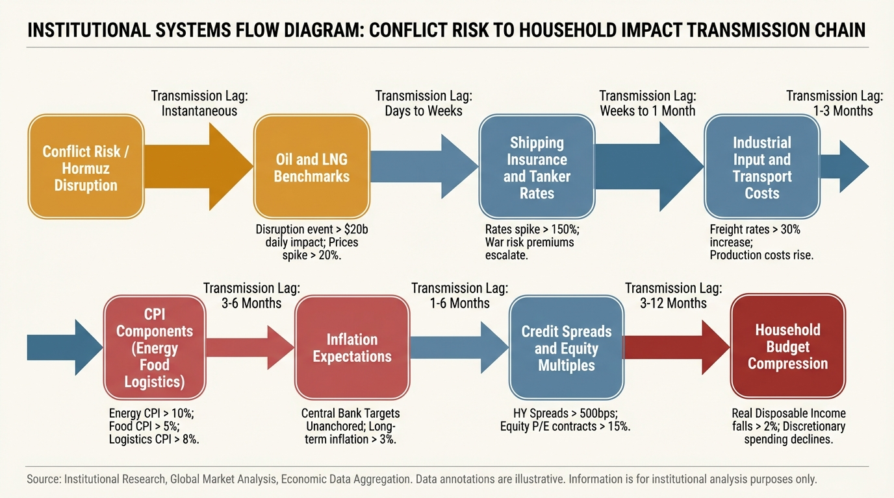
How conflict risk transmits into oil, inflation, credit spreads, equity repricing, and household budget stress.
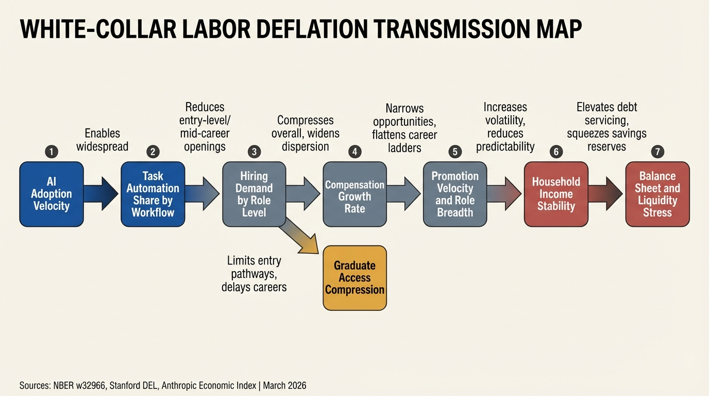
How AI-driven compensation compression, role fragmentation, and entry-level contraction are reshaping household wealth planning.
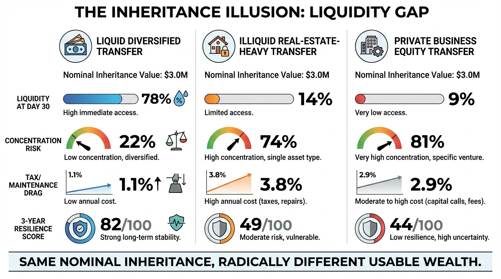
Why an equal inheritance headline can create radically different outcomes once liquidity, concentration, and tax structure are priced in.
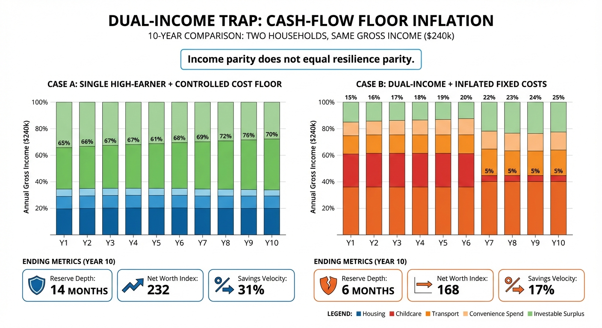
How fixed-cost inflation and weak savings architecture can make two-income households less resilient than expected.
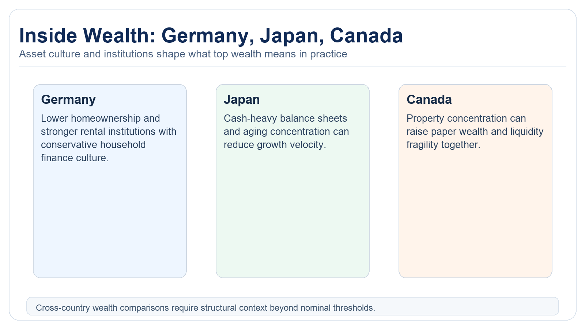
Why the same nominal net worth buys different liquidity, retirement durability, and transfer capacity across developed markets.
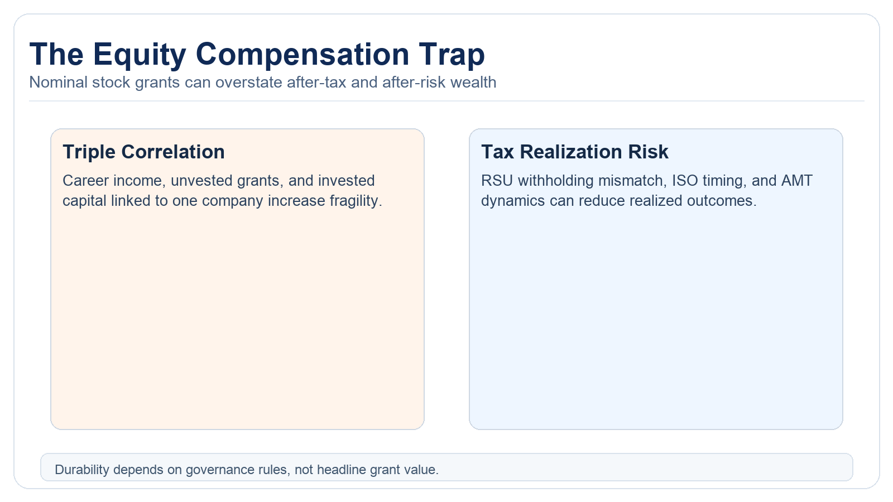
How RSUs, ISOs, and ESPP exposure can overstate real wealth when tax realization and concentration risk are ignored.
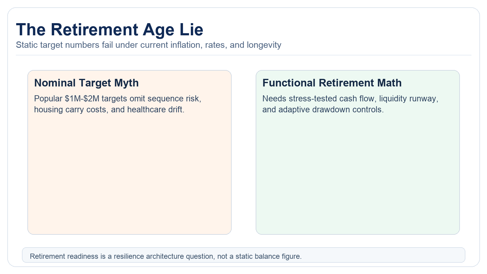
A forensic reset of retirement assumptions for a world with higher rates, sticky service inflation, and longer planning horizons.
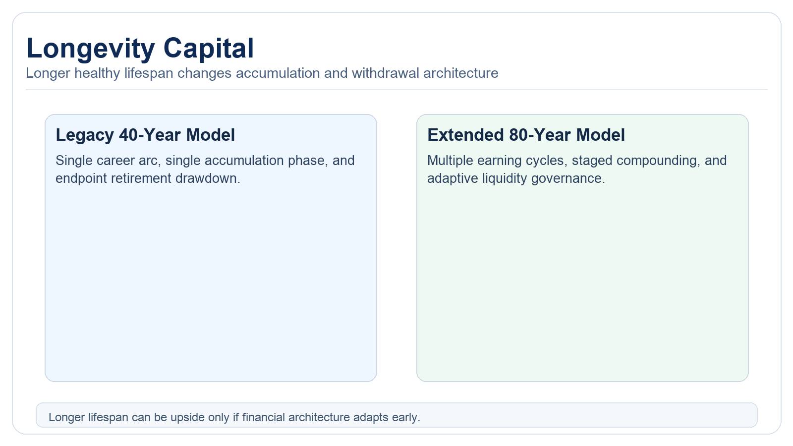
How extended lifespan scenarios change compounding, drawdown, career sequencing, and intergenerational transfer design.
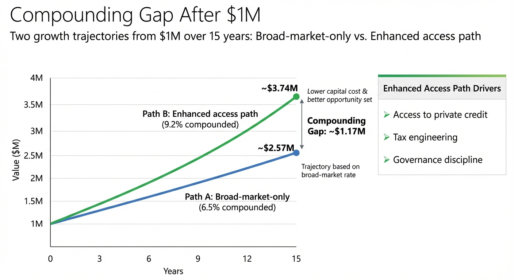
Why wealth growth becomes non-linear when access, cost of capital, and governance quality improve beyond scale thresholds.

A practical playbook for capturing AI upside while controlling concentration risk, valuation risk, and drawdown risk.
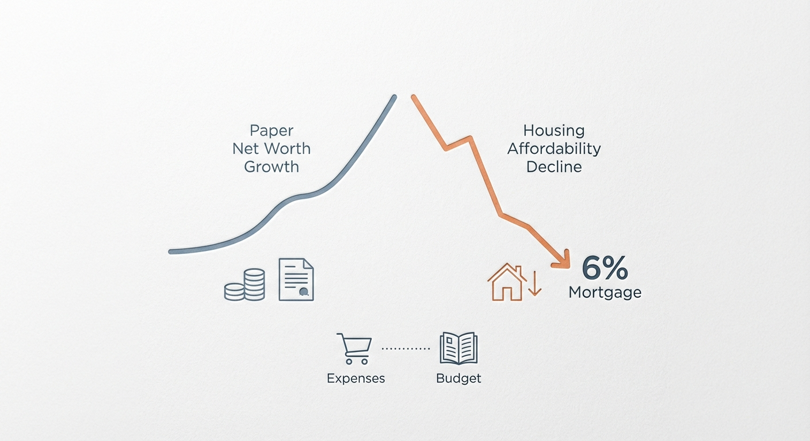
Why higher financing costs broke the old net-worth story, and how to shift from nominal wealth to liquidity-adjusted resilience.
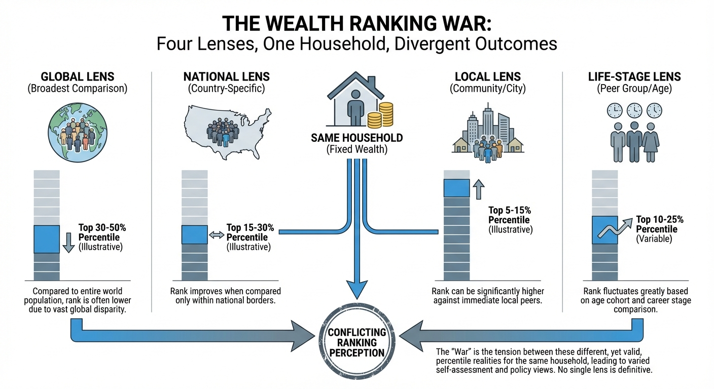
How one balance sheet can produce different percentiles across global, national, local, and life-stage frames.
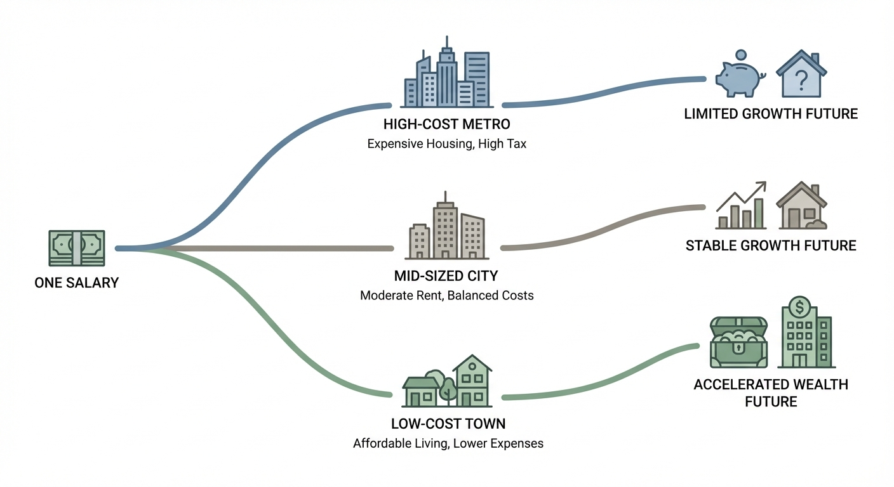
How city-level housing, taxes, and fixed-cost structures reshape compounding even when income is identical.
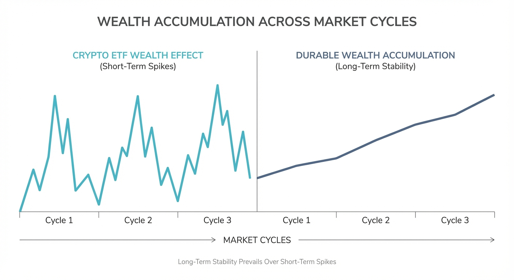
A framework to separate temporary wealth effect from process-driven long-term durability.
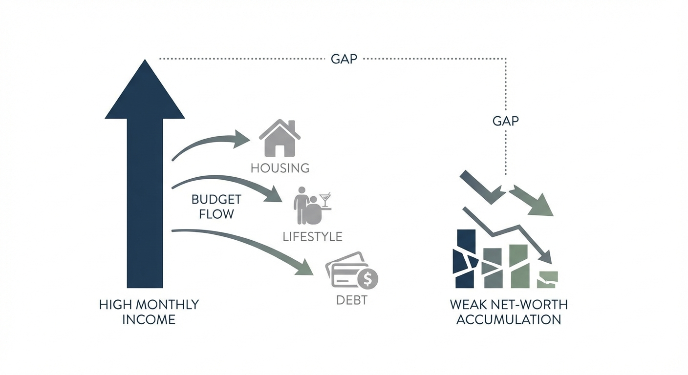
Why strong earnings can coexist with weak wealth resilience when conversion and governance systems are missing.
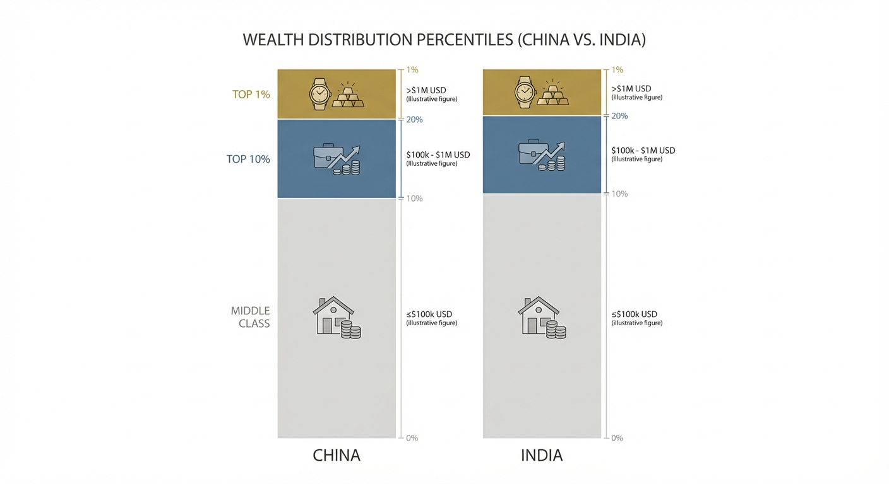
A structural read on top-10 and top-1 wealth pathways across two high-growth economies with different asset systems.
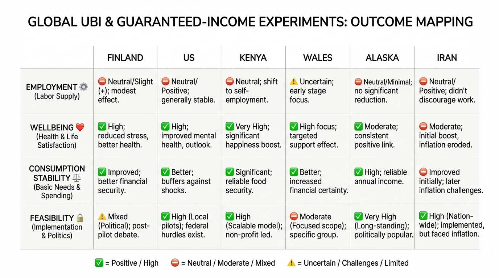
What basic income can and cannot deliver under current fiscal, labor-market, and inflation constraints.